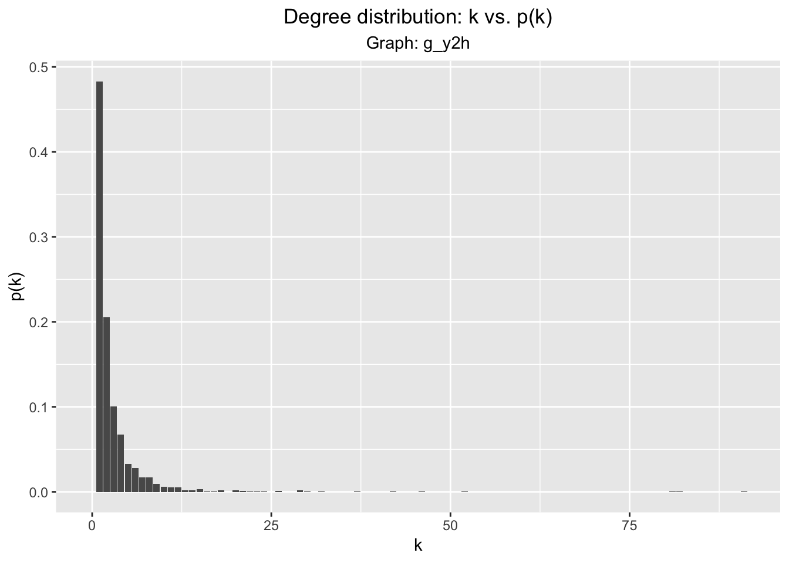
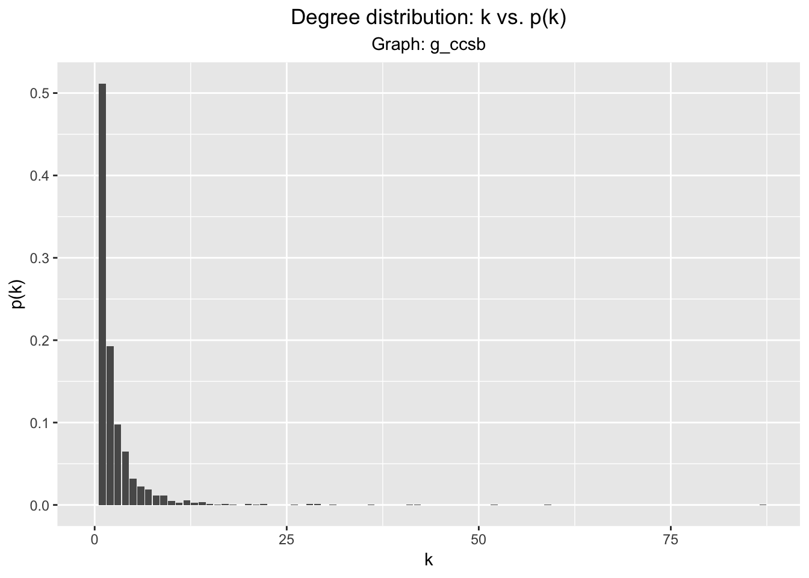
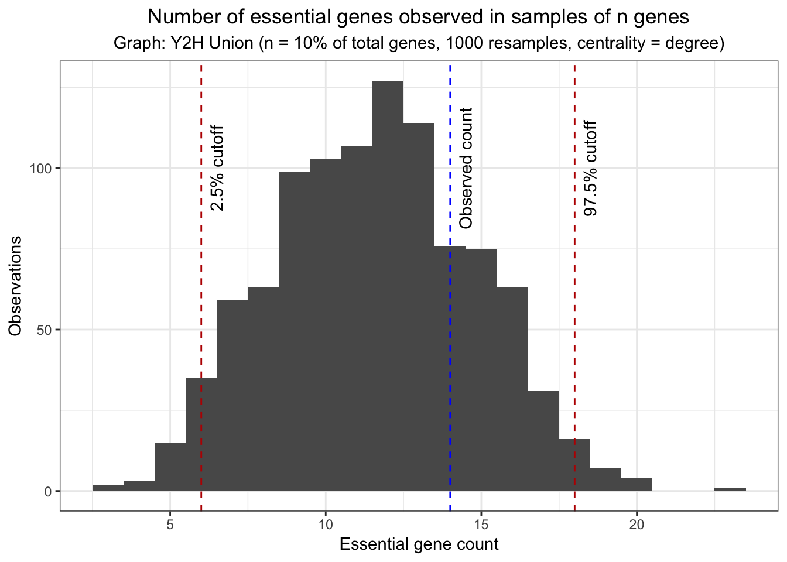
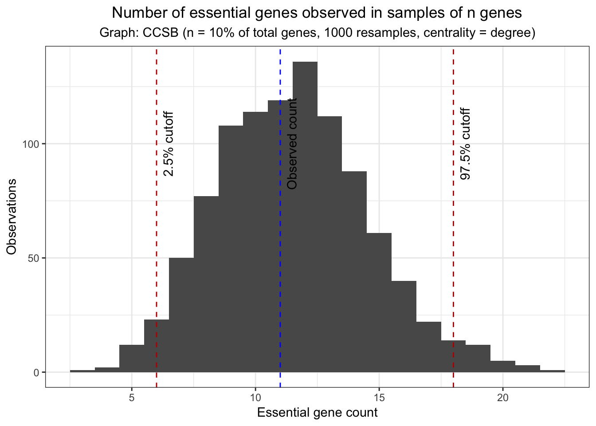
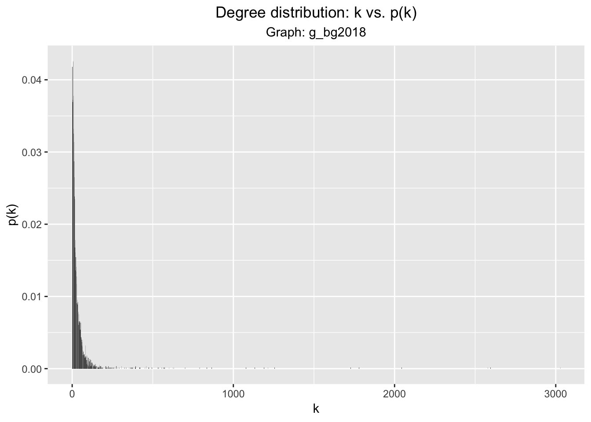
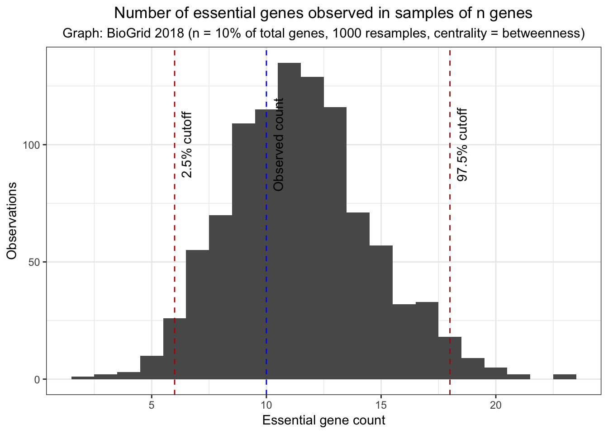
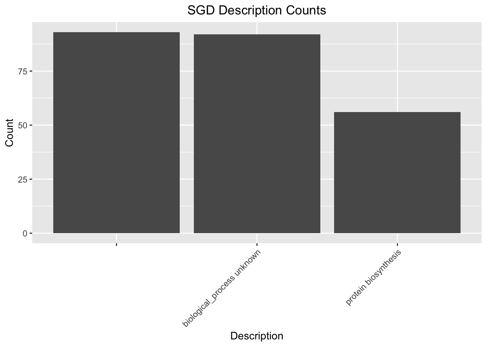
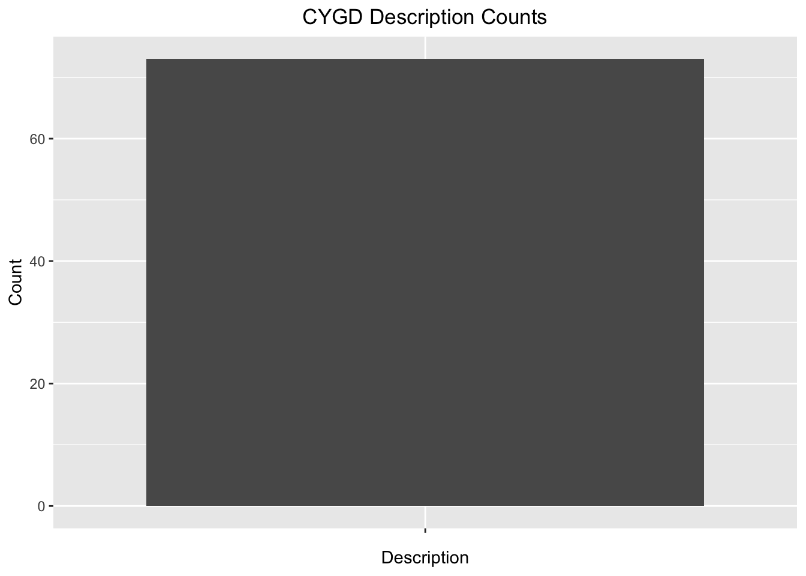

We’ll start by reading both graphs in:
g_y2h <- graph_from_data_frame(read.xlsx("./data/hw3/Y2H_uniondata.xlsx"), directed = FALSE)
g_ccsb <- graph_from_data_frame(read.xlsx("./data/hw3/CCSB_YI1.xlsx"), directed = FALSE)Some graph metrics
| Metric | g_y2h |
g_ccsb |
|---|---|---|
| Radius | \(3.48\) | \(1.76\) |
| Diameter | \(11\) | \(5\) |
| Average path lenght | \(3.48\) | \(1.76\) |
| Average clustering coefficient | \(0.10\) | \(0.11\) |
| Global clustering coefficient | \(0.024\) | \(0.021\) |
Defining a function to visualize a graph’s degree distribution:
plot_dd <- function(g){
g.dd <- data.frame(0:(length(degree_distribution(g)) - 1),
degree_distribution(g, cumulative = FALSE))
colnames(g.dd) <-c("k", "p_k")
ggplot(g.dd, aes(x = k, y = p_k)) + geom_bar(stat = "identity") +
labs(x = "k", y = "p(k)", title = "Degree distribution: k vs. p(k)",
subtitle = paste("Graph:", deparse(substitute(g)))) +
theme(plot.title = element_text(hjust = 0.5), plot.subtitle = element_text(hjust = 0.5))
}plot_dd(g_y2h)
We’ll also see if the g_y2h follows a power law distribution.
(g_y2h.pl_fit <- fit_power_law(degree(g_y2h)))## $continuous
## [1] FALSE
##
## $alpha
## [1] 2.893596
##
## $xmin
## [1] 7
##
## $logLik
## [1] -462.446
##
## $KS.stat
## [1] 0.02677559
##
## $KS.p
## [1] 0.9997574We see that the \(\alpha\) proposed by fit_power_law is 2.89, which is between \(2\) and \(3\), the value for the exponent proposed by Barabsi. Further, the KS.p value is very high, indicating that the degree distribution of g_y2h likely came from a power law distribution.
For g_ccsb:
plot_dd(g_ccsb)
(g_ccsb.pl_fit <- fit_power_law(degree(g_ccsb)))## $continuous
## [1] FALSE
##
## $alpha
## [1] 2.625133
##
## $xmin
## [1] 4
##
## $logLik
## [1] -608.3298
##
## $KS.stat
## [1] 0.02616949
##
## $KS.p
## [1] 0.9951312Similar to the above, we have an \(\alpha\) of 2.62 with a high KS.p value, indicating that g_ccsb likely comes from a power-law distribution.
We’ll now determine if each of the graphs are small-world following the methodology outlined in the Humphries 2008 paper. We’ll begin with g_y2h:
calc_S <- function(graph_object, B = 10, model = "", directed = FALSE){
directed = FALSE
B = 10
graph_object = g_y2h
L_observed <- mean_distance(graph_object, directed = FALSE)
C_observed <- transitivity(graph_object, type = "global")
L_sims <- vector()
C_sims <- vector()
order_observed <- gorder(graph_object)
size_observed <- gsize(graph_object)
for (i in 1:B){
# sim_graph <- barabasi.game(order_observed, directed = FALSE, power = 2.6)
sim_graph <- erdos.renyi.game(order_observed, size_observed, type = "gnm")
L_sims[i] <- mean_distance(sim_graph, directed = directed)
C_sims[i] <- transitivity(sim_graph, type = "global")
}
L_norm <- L_observed / mean(L_sims)
C_norm <- C_observed / mean(C_sims)
return( C_norm / L_norm)
}(Note: I think I should use the barabasi.game graph simulation function to simulate the networks as the observed graphs follow a scale-free power distribution. However, the results I wasn’t sure how to interpret the results that I got when I used that network model for my bootstrapping. As such, I used the Erdos~Renyi model instead, even though it may not adequately describe the network.)
calc_S(g_y2h)## [1] 18.33597Since the \(S\) score is greater than 1, we can conclude that the network is small-world.
calc_S(g_ccsb)## [1] 25.52712We similarly conclude that g_ccsb is also small-world.
We begin by reading in the YeastDeletion data set:
yeast_deletion_data <- read.csv("./data/hw3/Yeast_deletionProject_Fixed.csv", stringsAsFactors = FALSE)We’ll call a node a hub if it has degree centrality in the top 90% of possible degree centralities.
Now, looking for hubs according to their degree centrality:
g_y2h.highest_connectivity <- sort(degree(g_y2h), decreasing = TRUE, index.return = FALSE)
yeast_deletion_data %>% filter(ORF %in% names(head(g_y2h.highest_connectivity)))## ORF Gene Chromosome Start.Coord Stop.Coord
## 1 YLR423C APG17 XII 973165 971912
## CYGD.description SGD.description
## 1 protein involved in authophagy autophagySo we’ve observed that in the top 10% of nodes according to degree centrality, there is only one essential gene. To determine significance, we’ll take random samples of genes in the network and check those genes for essentiality.
essentiality_test <- function(graph_object, B = 1000, directed = FALSE, perc = 0.10,
graph_name = deparse(substitute(graph_object)),
centrality_function = degree){
pick.num <- floor(gorder(g_y2h) * perc)
graph_hubs <- sort(centrality_function(graph_object), decreasing = TRUE, index.return = FALSE)
observed_essential_counts <- yeast_deletion_data %>%
filter(ORF %in% names(head(graph_hubs, n = pick.num))) %>%
count() %>%
as.numeric()
essentiality_counts <- vector()
for (i in 1:B){
picked.random <- as.numeric(sample(gorder(g_y2h), size = pick.num))
random.vertices <- names(V(g_y2h)[picked.random])
essentiality_counts[i] <- yeast_deletion_data %>%
filter(ORF %in% random.vertices) %>%
count()
}
essentiality_counts <- unlist(essentiality_counts)
cutoff_lower <- quantile((sort(essentiality_counts)), 0.025)
cutoff_upper <- quantile((sort(essentiality_counts)), 0.975)
y_adj <- B * 0.1
ggplot(data.frame(essentiality_counts), aes(essentiality_counts)) + geom_histogram(binwidth = 1) +
theme_bw() +
labs(x = "Essential gene count", y = "Observations", title = "Number of essential genes observed in samples of n genes",
subtitle = paste("Graph: ", graph_name, " (n = 10% of total genes, ",
B, " resamples, centrality = ",
as.character(substitute(centrality_function)), ")", sep = "")) +
theme(plot.title = element_text(hjust = 0.5), plot.subtitle = element_text(hjust = 0.5)) +
geom_vline(xintercept = cutoff_upper, colour = "#BB0000", linetype = "dashed") +
annotate("text", x = cutoff_upper, y = y_adj, angle = 90, label = "97.5% cutoff",
vjust = 1.75) +
geom_vline(xintercept = cutoff_lower, colour = "#BB0000", linetype = "dashed") +
annotate("text", x = cutoff_lower, y = y_adj, angle = 90, label = "2.5% cutoff",
vjust = 1.75) +
geom_vline(xintercept = observed_essential_counts, colour = "#0000FF", linetype = "dashed") +
annotate("text", x = observed_essential_counts, y = y_adj, angle = 90, label = "Observed count",
vjust = 1.75)
}essentiality_test(g_y2h, graph_name = "Y2H Union")
Repeating for g_ccsb:
essentiality_test(g_ccsb, graph_name = "CCSB")
We see a similar result.
To summarize our results in the previous section - we found that the number of essential genes in the top 10% of genes ranked by degree centrality is not statistically significantly different than the number of essential genes found in a random sample of genes of similar size. This shows strong evidence in support of Yu’s claim that degree centrality is not correlated with gene essentiality.
Reading in BioGrid2018 network, visualizing degree distribution:
t_bg2018 <- read.table("./data/hw3/BioGrid2018_uni-2", header = TRUE, row.names = 1)
g_bg2018 <- graph_from_data_frame(t_bg2018[, 1:2], directed = FALSE)
plot_dd(g_bg2018)
g_bg2018.clusters <- clusters(g_bg2018)
g_bg2018.clusters$csize## [1] 5960For comparison, this graph’s metrics alongside the previous two graphs:
| Metric | g_y2h |
g_ccsb |
g_bg2018 |
|---|---|---|---|
| Radius | \(3.48\) | \(1.76\) | \(3\) |
| Diameter | \(11\) | \(5\) | \(6\) |
| Average path length | \(3.48\) | \(1.76\) | \(2.34\) |
| Average clustering coefficient | \(0.10\) | \(0.11\) | \(0.333\) |
| Global clustering coefficient | \(0.024\) | \(0.021\) | \(0.043\) |
We also see that g_bg2018 is a small-world graph as its S score is higher than 1.
calc_S(g_bg2018)## [1] 23.23263Finally, we’ll see if the degree distribution follows a power law:
(g_bg2018.pl_fit <- fit_power_law(degree(g_bg2018)))## $continuous
## [1] FALSE
##
## $alpha
## [1] 2.689456
##
## $xmin
## [1] 45
##
## $logLik
## [1] -5334.415
##
## $KS.stat
## [1] 0.02945661
##
## $KS.p
## [1] 0.2970416The KS.test statistic indicates that the g_bg2018 graph follows a power law distribution. Further, the exponent of the g_bg2018 graph is quite close to the exponents of the other two graphs (2.689 versus 2.63 and 2.89, respectively). A key aspect of being a scale-free graph is its self-similar nature; that is, at different scales, the various metrics that describe the graph should be roughly the same. We can view the g_y2h and g_ccsb graphs as subgraphs of the g_bg2018 graph, since this later graph contains more information than the previous two ones. Since the g_bg2018 graph can be described by the same metrics as the other two graphs, there is support for the claim that g_bg2018 is self-similar.
Getting largest connected component of g_bg2018.
g_bg2018.clusters <- clusters(g_bg2018)
g_bg2018.clusters$no## [1] 1As we can see, there is only one connected component in the BioGrid 2018 graph. We’ll visualize it’s degree distribution.
g_bg2018.largest_connected <- decompose.graph(g_bg2018)[[1]]
plot_dd(g_bg2018.largest_connected)We’ll see if there is some relation between betweenness score and essential genes by following a similar process as in 1b.
essentiality_test(g_bg2018, centrality_function = betweenness,
graph_name = "BioGrid 2018")
Just as before when investigating the relationship between degree centrality and essentiality, a bootstrap resample test of the data does not provide any evidence for a relationship between betweenness centrality and gene essentiality.
We used the MCL module on the HPC to perform the Markov clustering algorithm (with default values) on the BG2018 network. We coerced the output from that algorithm into the a tab-separated file BG2018.mcl, where the Gene column contains a gene and the Module column is the module assigned to it by the MCL algorithm. We take this information and turn it into a communities object via the assign_mcl_communities function:
g_bg2018.mcl_modules <- read.table("./data/hw3/BG2018.mcl", header = FALSE, sep = "\t",
stringsAsFactors = FALSE, col.names = c("Gene", "Module"))
g_bg2018.communities <- list(membership = g_bg2018.mcl_modules$Module,
vcount = vcount(g_bg2018),
names = g_bg2018.mcl_modules$Gene,
algorithm="MCL")
class(g_bg2018.communities) <- "communities"assign_mcl_communities <- function(graph_object, module_assignments){
mcl_module_assignments <- read.table(module_assignments, header = FALSE, sep = "\t",
stringsAsFactors = FALSE, col.names = c("Gene", "Module"))
mcl_communities <- list(membership = mcl_module_assignments$Module,
vcount = vcount(graph_object),
names = mcl_module_assignments$Gene,
algorithm = "MCL")
class(mcl_communities) <- "communities"
return(mcl_communities)
}g_bg2018.communities <- assign_mcl_communities(g_bg2018, "./data/hw3/BG2018.mcl")The communities are sorted by size, so the first community is the largest:
length(g_bg2018.communities[[1]])## [1] 5036We see the modularity score of this community structure is quite low:
modularity(g_bg2018, g_bg2018.communities$membership)## [1] 0.0005279652This score is incredibly low. To compare, doing a greedy clustering by maximizing modularity leads to the following modularity score:
modularity(g_bg2018, cluster_fast_greedy(g_bg2018)$membership)## [1] 0.2805357To remove random edges from g_bg2018, we used the UNIX command shuf to randomly pick 90% of the edges in the graph. We then ran the MCL algorithm on this reduced network and saved the module assignments in the appropriate file:
g_bg2018.subsampled_90 <- graph_from_data_frame(read.table("./data/hw3/BG_trimmed.subsampled_90",
sep = " ", header = FALSE,
stringsAsFactors = FALSE), directed = FALSE)
g_bg2018.subsampled_90.communities <- assign_mcl_communities(g_bg2018.subsampled_90,
"./data/hw3/BG2018.subsampled_90.mcl")
modularity(g_bg2018.subsampled_90, g_bg2018.subsampled_90.communities$membership)## [1] -0.01352761We repeated the above process to randomly remove 25% of the edges in g_bg2018:
g_bg2018.subsampled_75 <- graph_from_data_frame(read.table("./data/hw3/BG_trimmed.subsampled_75",
sep = " ", header = FALSE,
stringsAsFactors = FALSE), directed = FALSE)
g_bg2018.subsampled_75.communities <- assign_mcl_communities(g_bg2018.subsampled_90,
"./data/hw3/BG2018.subsampled_75.mcl")
modularity(g_bg2018.subsampled_75, g_bg2018.subsampled_75.communities$membership)## [1] -0.006211082So we see that by randomly removing edges and comparing the modularity score for the resulting MCL community assignments, the community structure gets worse. A more rigorous way of examining how much worse it is would be to repeat this procedure several times and create a histogram similar to the ones in the previous sections.
The communities found in #3B are organized such that the largest module is the first one. We searched for the genes in this largest module in the yeast_deletion_data table and summarized the results in the below barcharts. First, we visualize the counts of the SGD description, keeping note of only the descriptions that appear more than 10 times:
yeast_deletion_data %>%
filter(ORF %in% g_bg2018.communities[[1]]) %>%
count(SGD.description) %>% filter(n > 10) %>%
ggplot(aes(x = SGD.description, y = n)) + geom_bar(stat = "identity") +
labs(x = "Description", y = "Count", title = "SGD Description Counts") +
theme(plot.title = element_text(hjust = 0.5), plot.subtitle = element_text(hjust = 0.5),
axis.text.x = element_text(angle = 45, hjust = 1))
We see that the most represented function in this cluster is “NA”, “biological process unknown”, and “protein biosynthesis”. We look at the CYGD description now, only noting the descriptions that appear 10 or more times:
yeast_deletion_data %>%
filter(ORF %in% g_bg2018.communities[[1]]) %>%
count(CYGD.description) %>% filter(n > 10) %>%
ggplot(aes(x = CYGD.description, y = n)) + geom_bar(stat = "identity") +
labs(x = "Description", y = "Count", title = "CYGD Description Counts") +
theme(plot.title = element_text(hjust = 0.5), plot.subtitle = element_text(hjust = 0.5),
axis.text.x = element_text(angle = 45, hjust = 1))
The CYGD description data is not curated enough to be meaningful as most of the descriptions are blank. The SGD and CYGD description fields can benefit from some expert curation before any more meaningful analysis can be done.